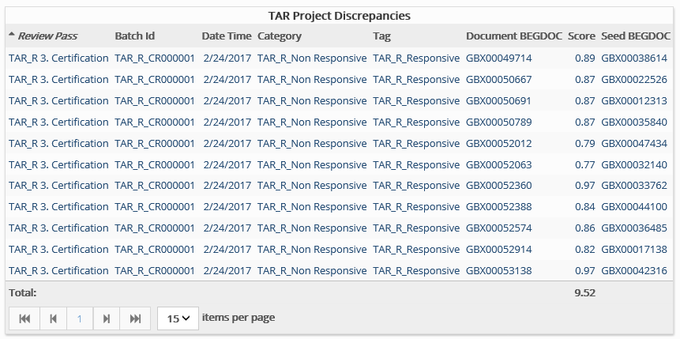

This report identifies documents for which there is a disagreement between the reviewer and the TAR analysis regarding document responsiveness.
Complete the following selections:
Report Title: A report title is selected by default; change the title if needed.
TAR Project: Select the TAR project of interest.
Batch: Select the review batch of interest.
